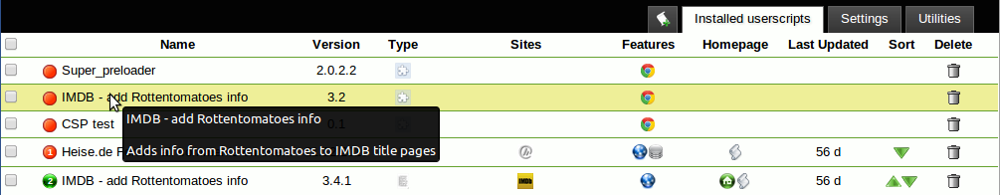
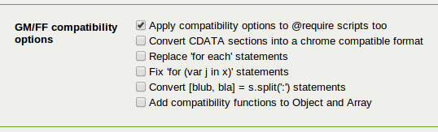

用了三年油猴，我对 Tampermonkey 的真实感受
从最初抱着试试看的心态装上第一个脚本，到现在把它当作浏览器日常必备扩展——这篇长期使用报告讲时间让它显出什么样。
装 Tampermonkey 到现在整三年——那个在浏览器里跑用户脚本的扩展，官网上描述得很清楚。
最初的动机很简单：某个网站每次跳转都要手动点确认，朋友丢了一个脚本链接，说从下载装上就自动过。那时候对用户脚本生态一无所知，把 Tampermonkey 和"浏览器小工具"划等号，想着凑合用用就算了。结果一装就是三年，从 Chrome 换到 Edge 再换回来，它是唯一跟我走的扩展。
哪点越用越顺手
刚装上的时候最犯怵的是脚本来源——Greasy Fork、OpenUserJS、Userscript.Zone 几个站来回切，哪个靠谱哪个水摸不清楚。现在已经有了稳定的路径：Greasy Fork 按关键词搜是默认起手式，已知某个网址想优化就直接去 Userscript.Zone 按域名查，GitHub 上翻 .user.js 文件用 Raw 安装按钮兜底。这个筛选顺序是三年里踩过几次坑磨出来的——在 GitHub 盲搜踩过一次恶意脚本之后，我再也不会跳过前三个来源直接往 GitHub 扎。

管理面板从最开始的不敢碰，到现在点开就知道要看什么：哪些脚本需要更新、最近哪个脚本在某个域名上有警告、启用/禁用的快速开关。三年里 Tampermonkey 的面板布局基本没大改，这种稳定性在浏览器扩展里其实难得——太多扩展三个月不见就换了个壳。
哪点越用越烦
兼容性设置是我最想吐槽的地方。三年前从 Greasemonkey 时代遗留下来的老脚本，现在还得靠那一排兼容开关兜底。我手上有个 2019 年写的旧脚本，每次 Tampermonkey 更新后都要重新调一次"兼容 forEach"和"兼容 powerful this"的开关组合——没有任何提示说哪个更新影响了它，只能逐个试。后来去tampermonkey文档翻了一下才明白"自动检测需要哪些适配"的工作原理，但实际体验是自动检测经常漏，尤其是年代久远的脚本。
还有日志调试这件事。脚本"好像没跑"的时候，要把日志级别调到 Debug，然后分清楚 service worker 控制台、页面控制台、扩展管理页的错误入口各管什么。第一次排障花了快半小时才搞明白"脚本没被注入"的问题要去后台控制台看，而不是页面的 F12。这个三控制台分工的设计对于偶尔调试的用户来说门槛偏高，我至今记不住完整流程，每次都得临时翻笔记。
哪个功能成了每天离不开的，哪个碰都没再碰
GM_setValue / GM_getValue 这一对我每天都在用。有个自己写的小脚本，跨会话存用户偏好全靠它们——关掉浏览器重开，脚本还能记住上次的设置。三年里换过三次浏览器，GM_setValue 的存储迁移没出过任何问题，这点比我用过的另一个同类扩展稳太多。
反过来，@grant none 模式我至今没真正用过。官方解释是"关闭沙箱让脚本直接跑在页面环境里"，听起来挺强大，但代价是所有 GM 函数都不可用——对于我这种既想改 DOM 又想存点东西的需求来说，none 模式等于阉割。写过几个测试脚本试过，最终还是回到显式列出需要的 @grant 声明这条路上。

观感修正：时间让我修正了两个当初的判断
刚装上那会儿觉得 Tampermonkey 就是个"装脚本的壳子"——真正决定体验的是脚本作者写得好不好。三年下来发现这个判断只对了一半：好的脚本当然重要，但 Tampermonkey 本身的兼容层、更新机制、权限声明这套基础设施才是生态能跑得动的前提。Greasemonkey 3.x 时代的脚本能在今天跑，靠的不是脚本作者持续维护，是 Tampermonkey 默默在底下做了一堆对齐工作。
另一个修正：当初高估了"脚本数量"的价值。Greasy Fork 上脚本数量最多、中文区也集中在这里，但真正好用的脚本其实分布得很散——有些作者只在 OpenUserJS 发，有些干脆就放在自己的 GitHub 仓库里。按关键词搜脚本是最容易踩坑的路径，按域名搜反而更靠谱，因为能精确锁定那个网站的具体问题。
去留结论：会不会卸载，什么信号出现就该换了
不会卸载。三年里它帮我省下了大量重复点击、重复登录、重复翻页的时间——这些时间加起来可能够看完一整本书。
但有两个信号出现我会考虑换：一是 Tampermonkey 官方开始对同步功能收费，现在免费版的云同步在多浏览器间切换时偶发延迟但还能用；二是浏览器本身开始系统性收紧用户脚本的注入权限——Chrome 的 Manifest V3 迁移已经让部分扩展的行为受限，如果有一天脚本注入也被严格限制，那不管换什么扩展都救不了。
就目前的节奏来说，它还能陪我好一阵。三年里从 Chrome 换到 Edge 再换回来，从 Greasy Fork 翻到 GitHub，从只会点安装按钮到能自己写几行脚本——这个扩展不是工具，是一扇门，推开之后发现的是整个用户脚本生态。资料在三个仓库都能拿到：GitHub上是完整镜像，国内网络环境下 Gitee 访问更快，GitCode 作为额外备份点。